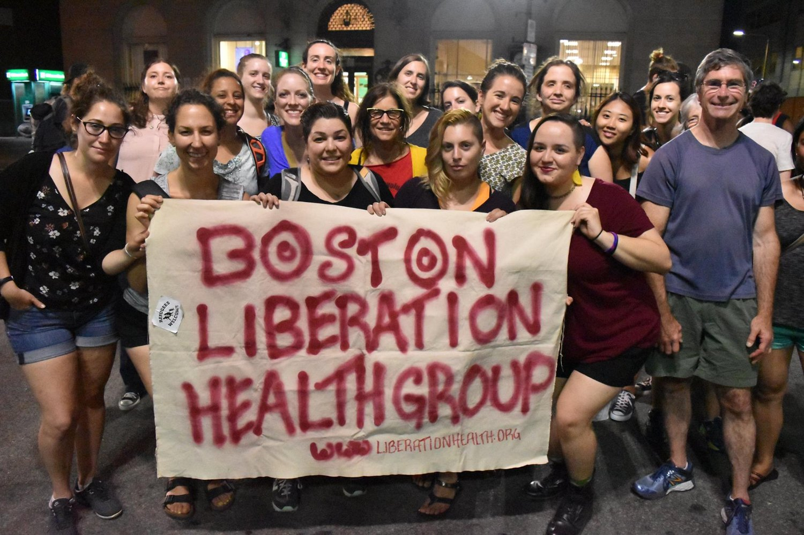

Boston Resources
Mutual Aid Resources
Mutual Aid Medford & SommervilleMutual Aid Medford and Somerville (MAMAS) began to organize on March 12, 2020 in response to the COVID-19 pandemic and its anticipated impact on our communities. Mutual aid is about showing up in our communities and pooling our resources to make sure everyone has what they need. We honor a long history of mutual aid by remembering that we are not alone and showing up for each other.
Food
Allston/Brighton Fridges
Insta: @allstoncommunityfridge
Housing

City Life Vida Urbana
City Life/Vida Urbana is a grassroots community organization committed to fighting for racial, social and economic justice and gender equality by building working class power. We promote individual empowerment, develop community leaders and build collective power to effect systemic change and transform society.
Health
 Boston Liberation HealthThe Liberation Health Group is a communal space created by and for those who are dedicated to advocating for social justice and liberation here in Boston, and around the world. We strive to learn and practice liberation health theories and methodologies to ground our fight for a society that prioritizes human needs over profit.